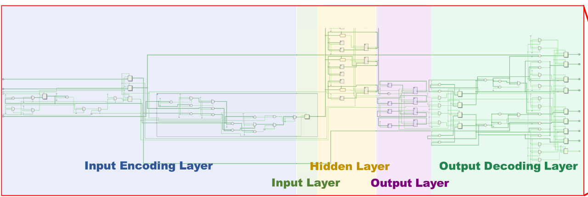

1. BallControl 문제를 회로의 입력과 출력으로 바꾸기
이 프로젝트의 출발점은 “공을 중앙으로 움직인다”는 물리적인 목표였습니다. 회로를 만들려면 이 문장을 숫자로 들어오는 입력, 내부에서 유지할 상태, 밖으로 내보낼 출력으로 바꿔야 합니다. 첫 글에서는 SNN 조사가 왜 BallControl 제어 회로로 이어졌고, 주어진 조건을 어떤 신호로 해석했는지 설명합니다.
SNN 조사에서 BallControl 회로 설계까지
경진대회는 조사와 설계를 연결하는 두 단계 과제로 진행됐습니다. 1차에서는 뇌의 뉴런처럼 시간에 따라 상태를 쌓고 스파이크를 만드는 SNN 하드웨어를 조사했습니다. 2차에서는 이 개념을 BallControl에 적용해, 공의 상태를 보고 어느 방향의 모터를 움직일지 결정하는 회로를 설계했습니다.
SNN에서 계산 결과는 매 순간의 연속적인 숫자만으로 표현되지 않습니다. 뉴런 내부의 막전위가 입력을 누적하다가 임계값을 넘을 때 짧은 스파이크가 발생합니다. 이 프로젝트에서는 그 스파이크를 X축과 Y축의 모터 방향 신호로 사용했습니다.
30×30cm 보드의 BallControl 요구사항
30×30cm 보드 위에는 1g에서 30g 사이의 공이 임의의 위치에 놓입니다. 목표는 공을 보드 중앙의 반경 1cm 영역으로 이동시키는 것입니다. 보드를 움직일 수 있는 방향은 X축 두 방향과 Y축 두 방향입니다.
반경 1cm 현재 공 위치
(+x, −y)
위 그림의 pull/push는 RTL 포트 이름입니다. 어떤 출력이 보드를 어느 방향으로 기울이는지는 모터 배치와 드라이버 극성에 따라 달라지며, 보관된 output-layer RTL에는 그 기구부 매핑이 포함돼 있지 않습니다.
| 주어진 조건 | 회로가 알아야 할 것 | 사용한 표현 |
|---|---|---|
| 공의 임의 위치 | 중앙에서 얼마나, 어느 방향으로 벗어났는가 | 부호가 있는 X·Y 위치 오차 |
| 네 방향 구동 | 어느 쪽 모터에 신호를 보낼 것인가 | X pull/push, Y pull/push 네 채널 |
| 공 무게 1~30g | 같은 오차에도 입력 자극을 어떻게 달리할 것인가 | 별도 실험 top의 ball_weight와 rate encoder |
| 중앙 반경 1cm | 제어가 도달해야 할 물리 목표 | 시뮬레이션의 최종 좌표와 Manhattan error로 비교 |
- 제어 오차
- 목표인 중앙 좌표와 현재 공 위치의 차이입니다. 오차의 부호는 움직일 방향을, 크기는 필요한 반응 정도를 나타냅니다.
- 방향 채널
- 하나의 signed X·Y 값 대신 +X, −X, +Y, −Y 네 채널을 두어 각 모터 방향을 독립적으로 계산합니다.
- 이벤트 기반 출력
- 연속적인 모터 명령값 대신 LIF 뉴런이 임계값을 넘는 시점의 스파이크로 구동 방향을 표현합니다.
위치·속도·무게는 서로 다른 입력으로 다뤘습니다
확인한 output-layer RTL에는 pos_x,
pos_y, v_abs_x, v_abs_y가 들어갑니다.
여기서 v_abs는 LIF 막전위를 낮추는 감쇠 항이며 공의 무게
포트가 아닙니다. 반면 두 번째 네트워크 실험은 별도의
ball_weight 포트와 Input_Neuron_RateEncoder를
사용합니다. 두 코드 경로를 하나의 신호처럼 섞어 설명하지 않았습니다.
| 입력 | 어디서 사용 | 정의 | 확인된 변환 |
|---|---|---|---|
| pos_x, pos_y | output-layer RTL | 중앙 0 기준 signed 위치 | 부호에 따라 네 방향 양수 크기로 분리 |
| v_abs_x, v_abs_y | output-layer LIF | 축별 속도 크기로 가정한 감쇠 입력 | − K_V × v_abs 항으로 적용 |
| ball_weight | 무게 반영 네트워크 실험 | testbench가 공급한 0–255 digital weight | 15g→123, 30g→255 |
| rate spike | RateEncoder | 동일 관찰 구간의 입력 이벤트 | counter < ball_weight일 때 발생 |
따라서 실험에서 더 큰 digital weight는 같은 counter 구간에서 더 많은 입력 spike를 만듭니다. 이 매핑은 센서에서 자동 측정된 공식이 아니라 testbench가 15g과 30g 조건을 비교하기 위해 넣은 값입니다. 무게와 실제 보드 가속도 사이의 물리 모델은 구현·검증 범위에 포함되지 않습니다.
위치·속도 입력에서 네 방향 모터 출력까지
속도 크기 → 중앙과의 오차를
네 방향 크기로 변환 → 방향마다 LIF
상태를 갱신 → X/Y 모터의
네 방향 스파이크
중앙을 좌표 0으로 두면 X가 양수인지 음수인지에 따라 필요한 운동 방향이
달라집니다. error_encoder는 부호가 있는 X·Y 오차를 네 개의
양수 크기로 바꿉니다. 각 값은 같은 구조의 LIF 뉴런으로 들어가고,
임계값을 넘은 채널에서 1-bit 이벤트가 나옵니다. 이 출력은 실제 모터에
바로 연결할 pulse width가 정의된 구동 파형이 아니라, 방향을 알리는
클록 단위 RTL 이벤트입니다.

네 방향을 독립적으로 처리하는 4채널 LIF 구조
한 뉴런이 X와 Y의 부호, 방향 선택과 모터 출력을 모두 맡으면 내부 조건이 복잡해집니다. 대신 네 방향에 같은 LIF 구조를 하나씩 두면 각 뉴런은 “자신의 방향으로 얼마나 움직여야 하는가”만 처리합니다. 방향별 동작을 따로 확인할 수 있고, 파라미터와 인터페이스도 동일하게 유지할 수 있습니다.
LIF 모델은 입력을 막전위에 더하고, 시간이 지나면 일부를 누설하며, 임계값을 넘으면 스파이크를 만든 뒤 상태를 초기화합니다. 상태 변화가 단순해 클록 단위로 추적하기 좋고, 작은 RTL 제어 회로로 표현하기에도 적합했습니다.
이 단계에서 한 일
과제 Q&A에 흩어져 있던 보드 크기, 공의 무게, 목표 영역과 구동 방향을 표의 신호 사양으로 옮겼습니다. 그 사양을 기준으로 오차 encoder와 네 방향 LIF 출력 구조를 잡고, 팀이 같은 입력·출력 정의를 사용하도록 설계 흐름과 발표자료를 정리했습니다.
다음 글: 실제 RTL 신호 흐름
다음 글은 error_encoder → 4채널 LIF neuron → motor direction
흐름을 실제 Verilog와 함께 따라갑니다. 마지막 글에서는 위치만 한 번
전달하던 입력과 공의 무게를 스파이크 빈도로 반영한 입력을 비교하고,
합성·전력 보고서에서 알 수 있는 것과 알 수 없는 것을 구분합니다.